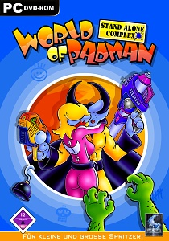

Welcome to the World of Padman Wiki!
Welcome to the unofficial World of Padman wiki! This is the source of all WoP related info. To get started,
simply click on the chosen category to the left sidebar to be taken to the main page of said category. Credit goes to Smiley for letting me use his base template that he uses for his WoP Archive.
World of Padman is a Freeware shooter game that runs on the ioq3 Engine. It started out as a mod for Quake 3 in 2004 until the Standalone version of the project was released in 2007.
The current version is 1.6 from 2011. WoP is available for Windows, Linux, Mac OS and Desura.

The World of Padman DVD Cover